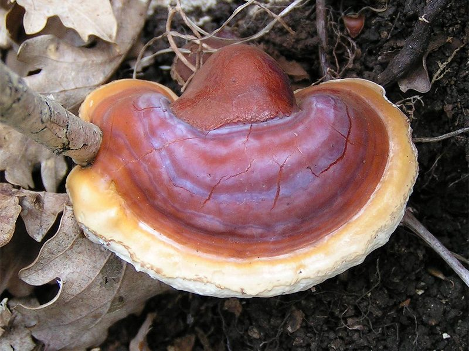

रेशीReishi
Ganoderma lucidum · Ganodermataceae · FNG-0004

- Scientific name
- Ganoderma lucidum (Curtis) P.Karst.
- Family
- Ganodermataceae
- Hindi
- रेशी / लिंगज़ी / गनोडर्मा / कड़वा ब्रैकेट
- Status here
- native
- IUCN
- not evaluated
When to look कब देखें
Present all year.
रेशी / Reishi Bracket Fungus
Ganoderma lucidum (Curtis) P.Karst. — Ganodermataceae
रेशी या "लिंगज़ी" — दुनिया के सबसे प्रसिद्ध औषधीय कवकों में से एक है। चीन में 4,000 साल से "अमरत्व की कवक" के रूप में जाना जाता है। पूर्वी UP में यह किसी पुराने नीम, अर्जुन, या आम के पेड़ के तने की जड़ के पास उगती है — लाल-भूरा चमकदार ब्रैकेट, जैसे वार्निश किया हो। वैज्ञानिक अनुसंधान में इसके ट्राइटर्पेन और पॉलीसैकेराइड पर व्यापक अध्ययन हो रहा है।
Quick Identification त्वरित पहचान
| Feature | Description |
|---|---|
| Bracket Form | Shelf-like bracket, 5–30 cm wide, kidney-shaped to fan-shaped with a lateral stalk |
| Upper Surface | Deep red-brown to purplish-black, concentric zones, highly glossy and lacquered-looking |
| Pore Surface | Creamy white below, pores tiny (4–6 per mm); turns brownish when bruised |
| Stipe (Stem) | Often present as a dark, twisted, shiny lateral stalk |
| Substrate | Found at the base of dead or dying hardwood trunks (attached to tree bases or roots) |
| Texture | Hard, tough, and woody when dry; non-edible |
Field tip: Look for a woody, kidney-shaped bracket with a highly polished or varnished reddish-brown surface growing at the base of trees like Neem or Arjun. Ganoderma applanatum is flatter, lacks a stem, and has a dull, unpolished upper surface.
Morphology आकारिकी
| Feature | Measurement |
|---|---|
| Cap (pileus) diameter | 5–30 cm |
| Stipe height | 5–15 cm (lateral) |
| Stipe diameter | 10–30 mm |
| Bracket thickness | 2–5 cm |
| Spore dimensions | 7–11 × 6–8 µm |
Bracket: Fan-shaped to kidney-shaped, 5–30 cm across, 2–5 cm thick. Annual (unlike Ganoderma applanatum which builds layers year by year).
Upper surface: The most distinctive feature — deeply coloured, glossy, lacquered appearance. Colour: concentric zones of reddish-brown to purplish-black, with cream-yellow margin at the growing edge (active growth zone).
Pore surface (below): White to cream; pores tiny (4–6 per mm). When fresh, pores are white; when injured, they bruise brownish.
Stipe (stem): Unlike most bracket fungi which lack a stem, G. lucidum often has a lateral stalk. The stalk is also dark, shiny, and twisted.
Spores: Ellipsoid, double-walled with inner wall truncated (double wall is family characteristic). Brown spore mass released in profusion during sporulation — a visible cloud of brown dust that can settle on surfaces around the bracket.
वार्निश जैसी चमक: रेशी ब्रैकेट की लाल-भूरी सतह इतनी चमकदार है मानो किसी ने पालिश की हो। यही इसकी पहचान है। बाकी सभी ब्रैकेट कवक इतनी चमक नहीं देते।
Ecological Role पारिस्थितिक भूमिका
White-rot decomposer: Ganoderma lucidum is a white-rot fungus — it degrades both lignin (giving wood its structure) and cellulose. This distinguishes it from brown-rot fungi that only remove cellulose and leave a brown crumbly lignin residue. White-rot fungi play a critical role in forest carbon cycling — fully breaking down dead wood into humus.
Pathogen on stressed trees: Ganoderma species are also root and butt-rot pathogens — they infect living trees through root wounds or stressed tissue. A bracket at the base of a living tree signals internal wood decay; the tree may be structurally compromised. This is important for: road/avenue trees, plantation management, and safety assessment.
Cavity creation: As the fungus decays the heartwood, it creates tree cavities — used by nesting birds (kingfisher, owls, parakeets) and bats. This biodiversity service is a secondary benefit of wood decomposition.
Spore release: A mature bracket can release millions of spores per hour. The brown spore "rain" settles on surfaces near the bracket — a visible biological event that makes this species easy to notice during September–November.
पेड़ की सेहत का संकेत: अगर किसी जीवित पेड़ के तने के नीचे रेशी ब्रैकेट दिखे — तो सावधानी। पेड़ के अंदर की लकड़ी सड़ रही है। पेड़ कमज़ोर हो सकता है — तूफान में गिर सकता है।
Life Cycle / Phenology जीवन चक्र
| Month | Event |
|---|---|
| Year-round | Mycelial colonisation underground/in wood; invisible |
| June–July | Bracket initiation triggered by monsoon moisture |
| Jul–Sep | Bracket maturation and size expansion |
| Sep–Nov | Heavy brown spore release; "spore rain" visible |
| Oct–Mar | Over-wintering pause in cold months |
Longevity: The mycelium in the wood can persist for decades. Individual brackets are annual but the fungal network in the host tree continues for many years.
वर्षों की यात्रा: रेशी का माइसेलियम पेड़ की लकड़ी में सालों-साल रहता है। मानसून में नया ब्रैकेट निकलता है, सितम्बर-नवम्बर में करोड़ों बीजाणु उड़ाता है, फिर सर्दी में शांत हो जाता है।
Agricultural / Human Relevance कृषि एवं मानव उपयोग
Medicinal significance:
Ganoderma lucidum is one of the world's most studied medicinal fungi. Active compounds:
- Triterpenes (ganoderic acids): Anti-inflammatory, liver protective, anti-hypertensive. 130+ triterpenes identified.
- Beta-glucan polysaccharides: Immune modulation — stimulate natural killer cells, macrophages. The polysaccharides are used as adjunct treatment in some cancer care protocols in China and Japan.
- Lectins and sterols: Various biological activities.
Clinical evidence: Anti-hypertensive effects are reasonably well-evidenced. Immuno-modulation in cancer adjunct therapy: some evidence, active research. "Curing cancer" claims: not validated — exaggerated marketing.
Traditional Chinese and Indian medicine: In TCM, "Lingzhi" is one of the premier adaptogens — taken as tea, capsule, or tincture. In India, wild-collected Ganoderma is sold by herbal medicine vendors in Varanasi, Lucknow, and Delhi markets.
Commercial cultivation: Now cultivated commercially on sawdust/wood substrate. Available as extracts, powders, capsules. Market growing rapidly in India. Cultivation kits available from ICAR-DMR Solan.
Tree pest management: When found on orchard or avenue trees, the bracket should be removed (manually) and the wound treated with Bordeaux paste to slow fungal progression. The affected tree may need structural support.
दवाई की कवक: दुनिया में "रेशी" का नाम करोड़ों लोग जानते हैं — चीन की पारंपरिक दवाई में 4000 साल पुराना इस्तेमाल। वैज्ञानिक रूप से इसके ट्राइटर्पेन और पॉलीसैकेराइड पर गहन शोध है। इम्युनिटी बूस्ट और एंटी-हाइपरटेंशन प्रभाव के लिए साक्ष्य हैं। "कैंसर ठीक करने" के अतिरंजित दावों से सावधान रहें।
Expected Locally स्थानीय रूप से अपेक्षित
Not a field record. Written from published accounts for eastern Uttar Pradesh. No confirmed local sighting yet — if you have seen it, that is what the atlas needs.
अभी तक स्थानीय पुष्टि नहीं। यह विवरण प्रकाशित स्रोतों से है, किसी अवलोकन से नहीं।
- Found at the base of several old neem trees (FLR-0009) in village boundary plantations in Basti district — these trees show signs of basal rot
- Arjun trees (FLR-0020) along Saryu riverbank: occasional bracket observed; possibly more common than documented
- Village kaviraj (traditional healers) in Ayodhya district: dried "kadwa chitra" (bitter bracket) occasionally recommended for liver complaints — likely refers to Ganoderma species
- Spore release visible September–October: brown dust settles on walls and plants near infected trees — distinctive and easy to observe
- Not collected for food (bitter, tough) — but increasingly inquired about for medicinal use as awareness grows
स्थानीय वैद्य और रेशी: अयोध्या जिले में कुछ पारंपरिक वैद्य "कड़वा ब्रैकेट" — संभवतः गनोडर्मा — लिवर रोगों में देते हैं। यह पारंपरिक ज्ञान और आधुनिक शोध का संगम है।
Distribution वितरण
Global range: Cosmopolitan in temperate and tropical forest systems; native to Europe, Asia, North America, and North Africa.
In India: Widespread in deciduous and mixed forests throughout the country, commonly infecting hardwood species in the plains.
In Uttar Pradesh: Distributed across central and eastern districts, particularly in public parks, roadside avenue plantations, and forest reserves.
In Basti district / eastern UP: Found at the base of old Neem, Arjun, and Mango trees in village borders and homestead orchards.
Range notes: No significant range changes documented; its presence is stable but closely correlated with mature host tree age and health.
Research Questions शोध प्रश्न
- Which tree species in eastern UP most commonly host Ganoderma lucidum — and is there a correlation with tree stress (drought, root damage)?
- Can traditional herbalists in Basti and Ayodhya districts identify Ganoderma species correctly — and do they distinguish between G. lucidum and G. applanatum (no medicinal value)?
- Does the spore concentration from fruiting Ganoderma brackets near schools or homes pose any respiratory health risk in eastern UP?
- Are any Ganoderma species in eastern UP being commercially collected for the lucrative herbal supplement market?
- Do nesting birds in Ganoderma-induced tree cavities (particularly kingfishers and owls) show any measurable beta-glucan uptake from spores in their diet?
Similar Species मिलती-जुलती प्रजातियाँ
| Species | How to distinguish |
|---|---|
| Ganoderma applanatum (Artist's Conk) | Flat bracket; no stem; perennial (annual growth layers); brown pore surface turns white and creamy; dull not lacquered surface |
| Fomes fomentarius (Tinder Conk) | Hoof-shaped; no stem; grey-brown; pores grey-brown; boreal distribution |
| Trametes versicolor (Turkey Tail) | Thin, wavy, multi-coloured bracket; no stem; not lacquered |
Taxonomy & Classification वर्गीकरण
Original description. Ganoderma lucidum was first described by William Curtis in 1781 as Boletus lucidus in Flora Londinensis 1(4): t. 72. It was transferred to the genus Ganoderma by Petter Adolf Karsten in 1881 in Revue Mycologique Toulouse 3(9): 17. Type locality: England. The genus name Ganoderma comes from the Greek ganos (brightness or sheen) and derma (skin), referring to the lacquered cap surface, and the species epithet lucidum is Latin for shining.
Subspecies. Monotypic — no subspecies are currently recognised.
Family and order placement. Belongs to the order Polyporales, family Ganodermataceae. The Ganodermataceae is a family of bracket fungi characterized by double-walled, pigmented, truncated spores.
Phylogenetic notes. Ganoderma lucidum is a species complex. Molecular analyses show that true G. lucidum sensu stricto is European, while Asian populations are often distinct (sometimes referred to as G. sichuanense or G. lingzhi), though G. lucidum remains the widely used name in Indian regional literature.
IUCN status rationale. This species has not been formally assessed by the IUCN Red List. As a widespread wood-decay fungus with vast wild and cultivated populations, it is not considered of immediate conservation concern.
Photo Gallery फ़ोटो गैलरी
Atlas Connections संबंधित प्रजातियाँ
- Neem — primary host tree observed in eastern UP (FLR-0009)
- Arjun Tree — riverbank host; occasionally observed (FLR-0020)
- Mound-building Termite — termites and Ganoderma both degrade woody material; competition-facilitation dynamics (SFL-0001)
- Termite Mushroom — contrast: saprotrophic (same kingdom) but completely different ecological niche (FNG-0001)
References सन्दर्भ
- Curtis, W. (1781). Flora Londinensis, 1(4): t. 72. B. White & Son, London.
- Karsten, P.A. (1881). Enumeratio Boletinearum et Polyporearum Fennicarum. Revue Mycologique Toulouse, 3(9): 16–23.
- Wasser, S.P. (2005). Reishi or Lingzhi (Ganoderma lucidum). Encyclopaedia of Dietary Supplements, 603–622. Marcel Dekker, New York.
- Boh, B. et al. (2007). Ganoderma lucidum and its pharmaceutically active compounds. Biotechnology Annual Review, 13: 265–301.
- Botanical Survey of India / ZSI (2018). Biodiversity of Uttar Pradesh. BSI, Allahabad.
- Stamets, P. (2005). Mycelium Running. Ten Speed Press, Berkeley.
- GBIF Occurrence Data — Ganoderma lucidum, India (2026).
Source file: species/fungi/mushrooms/reishi_bracket.md